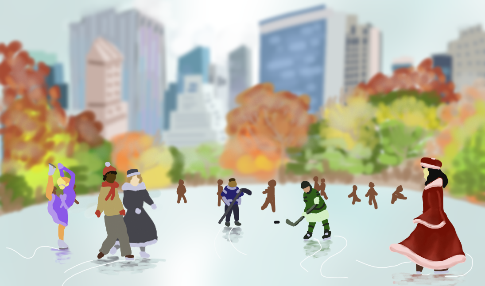

Nature: Animals

Mute Swans
My favorite artwork so far. Not the flashiest rendering nor the most ambitious composition. But like in love, there is beauty in simplicity, restraint, and enjoying what there is instead of what ought to be. I traditionally draw swans for Valentine's Day.
View on Instagram #swan #love #lake
A peaceful graze
I drew two horses in a beautiful wildflower meadow to celebrate the year of the horse. I found a reference picture with beautiful lighting and wanted to capture the magical sunset effect and layers of flowers for some dimensionality.
View on Instagram #horse #LunarNewYear #flowers #sun
North American Beaver
Digital illustration studying a North American beaver. This was the first thing I drew after I got into MIT. I wanted to focus on highlighting the volume of its fur and making it look round and cute.
Instagram carousel contains other beaver drawings too! #beaver
Beaver Paradise
Drew a very beautiful lake that looked straight out of a screensaver and populated paradise with beavers to celebrate Pi Day 2026 (specifically 3/14 1:59 26) with my future classmates!
Instagram carousel contains other beaver drawings too! #beaver #lake
Sunlit Swim
Mobile devices are not allowed in high school so I found an art app on my Chromebook instead called Kleki . The interface is very simple but constraints are the mother of creativity and I was able to get a nice lighting effect even if it's not rendered in HD. Of course. Beavers!
Instagram carousel contains other beaver drawings too! #beaver #lakeLandscapes
Landscapes were where I began to feel proud of my work.

Urban Dreams
As a kid, I imagined the American Dream to look like Boston at night where a jazzy saxophone solo drifts across the Charles River and windows aglow ripple in the water like shooting stars.
#Boston #2025.png)
Sailing Escape
If you couldn't tell I love boats. You can tell I drew this on my Chromebook because you can see a screen glitch if you look closely.
View on Instagram #boat #lake #2025
Winter Silence
Another James Julier tutorial. I love how snow turns the world stark white and quiet like a fresh sheet of scratch paper.
View on Instagram #snow #2025
Skating Pond
I was wishing for a white Christmas so I drew one instead
View on Instagram #snow #2024.png)
Portraits, Commencement Pics, Delulu College Scenes...
I saved a ton of commencement pics and photos straight from official college accounts on Instagram out of my own delulu and decided to put them to use as reference pictures.

Good Will Hunting
In AP Lang, we studied the rhetoric of the iconic bench scene and the discussion inspired this piece. I was in a mood to reflect into the Boston Public Garden pond.
View on Instagram #Boston #lake #2024Cartoons
Still learning how to stylize my art sometimes because honestly I find cartoons harder than realism sometimes.

How to Fall in Love Within College
To celebate AP score releases in 2025 I parodied my own study guides with a crash course in the most delulu subjects of all!
View on Instagram #thefrosh #love #2025
Swanboat Date
The frosh have the cutest possible date in Boston! Fun fact I actually had a dress like that.
View on Instagram #thefrosh #love #swan #boston #2025
The Frosh
I drew this in my APUSH notes and loved them immediately because it was giving preppy college brochure. They are now recurring characters in my cartoons and embody all the collegiate delulu I hope to experience.
View on Instagram #thefrosh #love #2024.png)
Finally Freedom
I love how it works for commencement day, the fourth of july, and the end of a strenuous string of tests.
#meme #2024.png)
Is Delulu the Solulu?
One of my earliest digital artworks. Graced the Reddit Post where I conceived the Deluluversity.
#meme #2024 #Udelulu